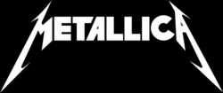

A metallica hivatalos oldalát itt találod
A Metallica amerikai thrash metal zenekart James Hetfield és Lars Ulrich alapította 1981-ben Los Angelesben. Az utóbbi évtizedek egyik legsikeresebb együttese, az 1980-as és az 1990-es évek meghatározó zenekara.

| Sorszám | Album neve | Kiadási év |
|---|---|---|
| 1. | Kill 'Em All | 1983 |
| 2. | Ride the Lightning | 1984 |
| 3. | Master of Puppets | 1986 |
| 4. | ...And Justice for All | 1988 |
| 5. | Metallica (Black Album) | 1991 |
| 6. | Load | 1996 |
| 7. | Reload | 1997 |
| 8. | St. Anger | 2003 |
| 9. | Death Magnetic | 2008 |
| 10. | Hardwired... to Self-Destruct | 2016 |
| 11. | 72 Seasons | 2023 |
A Metallica zenei stílusára több ismert rock- és metalzenekar is hatással volt. Zenéjükben a heavy metal, a hard rock és a punk rock elemei is megjelennek.
Ezek a hatások segítettek kialakítani a Metallica sajátos, gyors és erőteljes hangzását, amely fontos szerepet játszott a thrash metal fejlődésében.